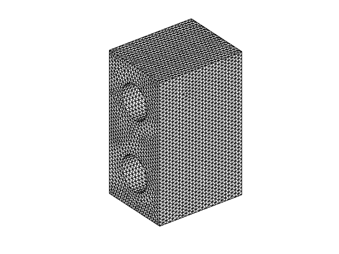
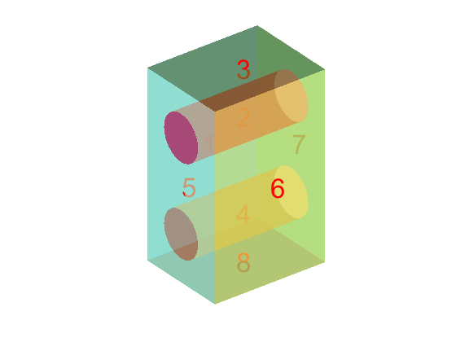
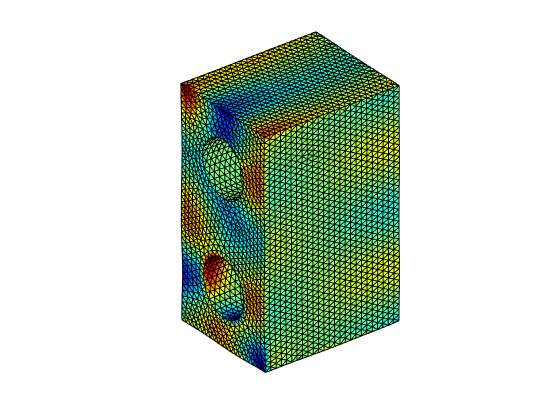

Contents
- Skin Model Generation Process
- 1 Creat instance
- 2 Read STL model
- 3 Segment model into N surfaces
- 4 Get the Deviation Table 'DivTable' for simulation
- 5 Edit parameters in 'DivTable'
- 6 Simulate for each surfaces
- 7 Solving the Combination by FEA with Penalty Function Approach
- 8 Use 'ResetD' to set deviation to zero, not delet the model and generate new one
- Save M, to use in next time
- Reload the model used before
- Simulate deviations for each surfaces
Skin Model Generation Process
close all
clear
clc
1 Creat instance
M=SkinModel;
2 Read STL model
M.Read('nominal_binary.stl');
M.ShowOrg;
 3 Segment model into N surfaces
M.Seg(8,8); M.ShowSeg;
4 Get the Deviation Table 'DivTable' for simulation
M.GetDivTable;
5 Edit parameters in 'DivTable'
load Table
M.DivTable=Table;
6 Simulate for each surfaces
M.DivSim;
7 Solving the Combination by FEA with Penalty Function Approach
M.Comb(1); M.ShowSM;
8 Use 'ResetD' to set deviation to zero, not delet the model and generate new one
M.ResetD;
Save M, to use in next time
% save M M
Reload the model used before
This is because each time the numbering of segmentation result is changing. To specify the surface I already konw, a model is saved in advance and reload here. Also, after Comb, the stiffness matrix K is already calculated. Reload will save time for calculation
% load M;
Simulate deviations for each surfaces
It is possible to specify deviation for certain feature manually For more infomation, looking at the code
% M.RO(6,[3,3,0]); % M.TR(3,[0,3,3]); % M.MD(2,5,3);